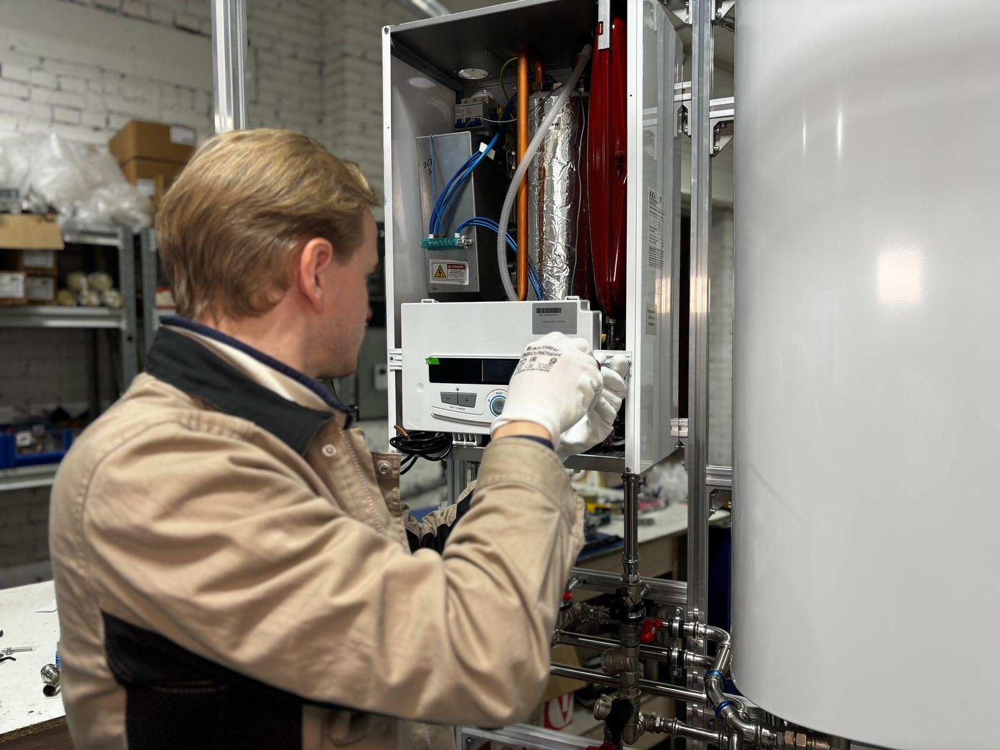

A wet floor beside the water heater is a call we hear about constantly, and the first question is always the same: where is it actually coming from? Water travels along pipes and collects wherever the floor dips, so the puddle is often nowhere near the source. It might be the temperature and pressure relief valve or its discharge line, the drain valve near the bottom of the tank, the hot and cold connections on top, condensation on a cold tank, or a nearby pipe that has nothing to do with the heater. It might also be the tank itself, and that answer changes everything. In Trenton, NJ, we start every leak call by finding the true source.
Our diagnosis is methodical. We dry the area, look at the T&P valve and the end of its discharge pipe, inspect the drain valve, and follow the hot and cold lines up to the fittings on top of the tank. On gas units, we look under the burner access for water, which can point to condensation or, more seriously, a failing tank. If the relief valve has been discharging, we put a gauge on the system to read static pressure and check for thermal expansion, since a closed plumbing system without an expansion tank can push pressure high enough to open the valve. Only then do we recommend a fix.
Most leaks are fixed in a single visit. We replace worn relief valves, swap plastic drain valves for sturdier brass valves, rebuild corroded connections, add or recharge an expansion tank, and install a pressure-reducing valve when street pressure runs high. If the tank itself is leaking, there is no safe patch, and we will tell you that plainly along with your replacement options. We also help prevent the next leak from doing damage: a drain pan piped to a proper drain, a water sensor or automatic shutoff valve, and a clear label on the shutoff. For water heater leak repair in Trenton, call (609) 210-1039.
Our two most requested services are Water Heater Repair in Trenton and Water Heater Replacement in Trenton. Start there if you're not sure what you need.

How to Tell Something Is Wrong
Water heaters usually give plenty of warning before they fail, as long as you know what to look and listen for. Here are the most common indicators that it's time to call a professional:
- A puddle or damp spot on the floor around the base of the tank
- Moisture or mineral crust at the end of the relief valve pipe
- Rusty or discolored hot water paired with dampness at the base
- Corroded pipe connections or damp flex lines above the heater
- A drain valve at the bottom of the tank that drips even when closed
- A musty odor or soft floor around the heater location
- A water bill that rises without any change in usage
- Dampness in the combustion area of a gas unit
Small Symptoms, Big Consequences
A little rust-colored water or a relief valve that drips now and then can be the first hint of a tank that is close to the end. At the first hint of a problem, reach out to Trenton Water Heater at (609) 210-1039 and we'll take a look.
Water Heater Trouble? Call Us.
Call Trenton Water Heater for fast, reliable service.
Call (609) 210-1039 TodayWater Heater Leak Repair FAQ
Why Hire a Professional for Water Heater Leak Repair?
Leaks look simple and often are not. Water can start at a top fitting, run down under the jacket, and show up at the base, and sweating tanks add confusion. A wrong part is not the only risk. Plugging a dripping relief valve removes the protection against overheating and overpressure, forcing a corroded connection can split it open, and electric heaters bring high-voltage wiring into a wet area. And if the tank itself is failing, no DIY fix will hold for long.
Our technicians trace leaks methodically and fix the cause, not just the drip. We dry the unit, watch for fresh water, put a gauge on the system whenever the relief valve is involved, and check for expansion issues that cause weeping valves. We replace valves and fittings with durable replacements, swap plastic drain valves for brass, and add an expansion tank or pressure-reducing valve when pressure is the root problem. When the tank is the problem, we say so directly and explain replacement options, including the drain pan and leak protection that can keep the next failure from soaking your floors.
How We Handle Water Heater Leak Repair
We work through a clear, repeatable process so you always know what's happening and what it will cost. Here's exactly how a typical visit unfolds:
Contain the Water
We help you close the cold supply and shut off gas or power, then protect nearby flooring and belongings so the damage stops spreading.
Trace the Source
Every likely source gets checked: T&P valve, drain valve, inlet and outlet fittings, connectors, condensation, and the tank itself. No part is swapped until the source is confirmed.
Measure What Caused It
We gauge household water pressure and look at expansion control, because a closed system without room to expand can force the relief valve open.
Lasting Repair
Repairs are tested, not assumed. We restore water and heat, check each joint, and suggest a drain pan or leak sensor where it would help. If the tank has failed, you get straight replacement options.
Repair or Replace? Let's Figure It Out.
Call Trenton Water Heater to talk through your situation with an experienced technician.
Call (609) 210-1039 TodayTips to Keep Your Water Heater Healthy
A few simple habits, like an annual flush and a quick look at the relief valve, can add years to a tank. Here's where to begin:
- A battery leak alarm beside the heater costs little and can catch a problem days sooner
- High street pressure is hard on water heaters, so a pressure test and regulator can prevent repeat drips
- Ask about expansion control if your home has a check valve or backflow preventer
- Replace a depleted anode rod before the steel tank becomes the next target for corrosion
- Flush the tank once a year so sediment does not overheat the bottom and speed corrosion
- Install a drain pan piped to a safe spot, which matters most for attic, closet, and upstairs heaters
- A quick monthly look at the base, valves, and top connections catches leaks early
Doing It Yourself vs. Hiring a Technician
A few tasks, like checking the temperature setting or lifting the relief valve lever to test it, are fine for homeowners, but most water heater work involves gas lines, venting, 240-volt circuits, or a tank full of scalding water, and that belongs with a professional. Consider the following comparison:
| Factor | DIY Attempt | Professional Service |
|---|---|---|
| Diagnosis | Fix the part nearest the puddle | Every valve and fitting checked in order |
| T&P Valve | Valve capped to stop the drip, a serious hazard | Valve and pressure both addressed |
| Old Fittings | Tightened until the fitting cracks | Corroded connections replaced with new fittings |
| False Alarms | Unneeded parts or a whole new heater | Only real problems get repaired |
| Water Damage | Damage prevention skipped | Shutoff labeled and leak alarms suggested |
| Result | Temporary fix that may fail again | Leak solved and cause corrected |
Get Water Heater Leak Repair Help Today
Get your hot water back before a small fault turns into a flooded floor. Trenton Water Heater is ready to respond fast.
Call (609) 210-1039 NowWater Heater Leak Repair Across the Trenton Area
Our service area reaches well past the city limits. Choose your community for local details.